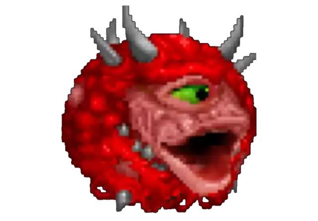

Mi Portafolio
Alberto Miranda De Los Rios
Gerardo Octavio Vargas Landeros (Los Mochis, Sinaloa, 21 de octubre de 1962) es un empresario
político mexicano. De 2006 a 2009 sirvió como diputado de la LX Legislatura del Congreso de la Unión
representando Sinaloa.Actualmente se desempeña como presidente municipal de ahome desde el 1 de noviembre de 2021.
